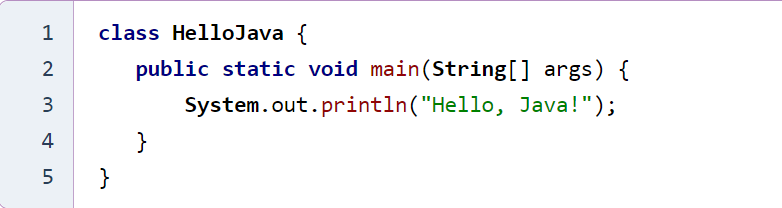

Урок 2: Основы синтаксиса Java
Введение
Синтаксис Java (Java Syntax) — это основа языка, все основные правила, команды, а также конструкции для написания программ, которые «понимают» компилятор и компьютер. У каждого языка программирования есть собственный синтаксис, так же как у естественных языков, которыми мы пользуемся для общения друг с другом.
Этот урок посвящен базовому синтаксису языка программирования Java и нацелена на тех, кто изучает Java, начинающих разработчиков или тех, кто знает другой язык программирования. Некоторые аспекты могут быть непонятны новичкам. Если такое случится с вами, рекомендуем пропустить сложные части и сосредоточиться на примерах. Как и во всем остальном, язык программирования лучше изучать циклично, постепенно приходя к более глубокому пониманию тех или иных понятий.
Каждая Java-программа — это по сути набор объектов, которые включают данные (переменные) и поведение (функции или методы). Также программа Java представляет собой класс или несколько классов.
- Объект — это экземпляр класса. Они имеют состояния и поведение.
- Класс — это модель, шаблон или чертеж объекта. Он описывает поведение и устанавливает, что поддерживает объект его типа.
- Методы предназначены для описания логики, работы с данными и выполнения всех действий. Каждый метод определяет поведение.
Пример программы на Java
Основные правила синтаксиса Java
- Имя файла должно совпадать с именем класса;
- Чаще всего каждый класс находится в отдельном файле с расширением .java. Файлы классов обычно сгруппированы в папки. Эти папки называются пакетами;
- Символы чувствительны к регистру. String не равно string;
- Начало обработки Java-программы всегда начинается в main методе: public static void main (String [] args). Метод main() является обязательной частью любой Java-программы;
- Метод (процедура, функция) представляет собой последовательность команд. Методы определяют поведение над объектом;
- Порядок методов в файле программы не имеет значения;
- Имена всех методов в синтаксисе Java начинаются со строчной буквы. При использовании нескольких слов последующие буквы пишутся заглавными (public void myFirstMethodName ());
- Имейте в виду, что первая буква имени класса должна быть в верхнем регистре. Если вы используете несколько слов, указывайте прописные буквы для первой буквы каждого слова (например, «MyFirstJavaClass»);
- Файлы сохраняются с именем класса и расширением .java (MyFirstJavaClass.java);
- В синтаксисе Java есть разделители {...}, которые обозначают блок кода и новую область кода; каждый оператор кода должен заканчиваться точкой с запятой.
Заключение
В заключение, язык Java предлагает множество преимуществ для программистов всех уровней. Его функциональность делает его отличным выбором для создания различных приложений, от веб-сервисов до системного программного обеспечения.